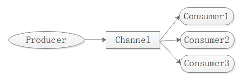

redis 发布/订阅模式
redis实现了发布/订阅消息通信方式，基本模型如下图所示，此模型主要分为3各部分：producer（生产者），channel（频道），consumer（消费者）。生产者生产消息之后发布到频道中，消费者从频道总获取消息。redis只能进行广播，即所有订阅了此频道的消费者都能从频道中获取信息。

redis 发布/订阅指令
redis 的发布/订阅相关指令如下1
2
3
4
5
6 psubscribe pattern [pattern ...] //订阅一个或多个符合给定模式的频道。
pubsub subcommand [argument [argument ...]] //查看订阅与发布系统状态。
publish channel msg //将信息发送到指定的频道。
punsubscribe [pattern [pattern ...]] //退订所有给定模式的频道。
subscribe channel [channel ...] //订阅给定的一个或多个频道的信息。
unsubscribe [channel [channel ...]] //指退订给定的频道。
使用
publish 指令用于向评到发布信息，返回值为收到该信息的订阅者数量。如下，我们先创建一个消费者：1
2
3
4 subscribe chatroom
1) "subscribe" //订阅反馈
2) "chatroom" //订阅频道
3) (integer) 1 //已订阅频道的数量
然后新建一个连接窗口并向此频道发布消息：1
2 publish chatroom 'hello everyone!'
(integer) 1 //订阅者数量
会发现在订阅者窗口出现新的信息：1
2
31) "message" //消息反馈
2) "chatroom" //频道标识
3) "hello everyone!" //消息内容
php下简单的订阅/发布 demo
notice: php下使用redis需要安装redis扩展。
简单的订阅/发布主要有两个主体：publisher和consumer。我们先创建consumer类：1
2
3
4
5
6
7
8
9
10
11
12
13
14
15
16
17
18
19
20
21
22
23
24
25
26
27
28
29consumer.php
class Consumer
{
protected $redis;
public function __construct($dsn, $port = 6379)
{
$this->redis = new \Redis();
$this->redis->connect($dsn, $port);
}
public function subscribe(string $channel, callable $callback)
{
print_r('已订阅频道：' . $channel . ' 等待接收信息...' . PHP_EOL);
$this->redis->subscribe([$channel], $callback);
}
}
function receive($redis, $channel, $msg)
{
print_r('收到来自：' . $channel . ' 的消息：'. $msg . PHP_EOL);
}
$consumer = new Consumer('127.0.0.1');
$consumer->subscribe('chatroom', 'receive');
在consumer.php中，创建了一个Consumer类，内部包装了一个redis类，并代理操作了redis的subscribe方法。值得注意的是redis的subscribe方法接收的第一个参数是一个频道标识的数组，第二个参数是一个php回调方法。redis订阅一个频道后，如果接收到信息，会执行与订阅频道绑定的回调方法，并向其中传递三个参数，第一个是redis实例，第二个是接收到信息的频道标识，第三个是接受到的信息。在consumer.php中，我们订阅了chatroom频道并绑定了一个方法名为receive的方法。
notice: redis的subscribe方法是阻塞运行的，在调用subscribe方法后，位于subscribe之后的代码不会运行，脚本也不会停止，除非抛出异常或者手动停止脚本。
publisher.php：1
2
3
4
5
6
7
8
9
10
11
12
13
14
15
16
17
18
19
20
21
22
class Publisher
{
protected $redis;
public function __construct($dsn, $port = 6379)
{
$this->redis = new \Redis();
$this->redis->connect($dsn, $port);
}
public function publish(string $channel, string $message)
{
$ret = $this->redis->publish($channel, $message);
print_r('向频道：' . $channel . ' 发送消息： ' . $message . ' 接收者: ' . $ret . PHP_EOL);
return $ret;
}
}
$publisher = new Publisher('127.0.0.1');
$publisher->publish('chatroom', 'hello everyone!');
在publisher.php文件中，创建了一个Publisher类，和Consumer类一样，封装并代理操作了redis的publish方法。redis的publish方法接收来两个参数，第一个参数是频道标识，第二个是要发布的数据。在此文件中，我们向chatroom频道发布了一条’hello everyone!’消息。
在php环境下，我们先执行consumer.php文件1
2 php consumer.php
订阅频道：chatroom 等待接收信息...
然后执行publisher.php文件1
2 php publisher.php
向频道：chatroom 发送消息： hello everyone! 接收者: 1
会发现订阅者已经接受到消息：1
2
3 php consumer.php
订阅频道：chatroom 等待接收信息...
收到来自：chatroom 的消息：hello everyone!
小结
实际的而开发中很少单独使用redis的发布/订阅，因为redis的发布/订阅本身不支持消息的持久化，也没有消息确认机制，无法保证消息一定有消费者接收。一种常用的简单使用方法是和List结合，形成所谓的消息队列，将所有需要发送的消息放到队列中，并通过publish的返回值来判断消息是否被接收，如果没有被接受，则将消息再次放入队列中。